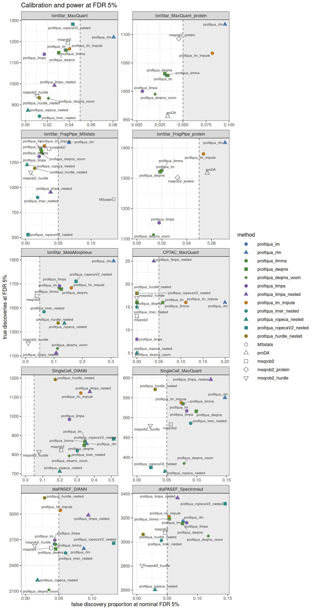
Benchmark results
The benchmark pipeline (make benchmark; workflow/Snakefile, config/config.yaml) prepares each dataset once, fits every method to the input it needs, and scores how well each method ranks proteins with a known change above unchanged ones. The tables and figures come from the files the pipeline exports to inst/extdata, so this page renders without data downloads.
IonStar: E. coli spiked into a human background at five dilutions; quantified with MaxQuant, FragPipe and MetaMorpheus/FlashLFQ (with match-between-runs)
CPTAC study 6: UPS1 spiked into yeast; MaxQuant
ProteoBench DIA single-cell (Orbitrap Astral, 250 pg): yeast up fivefold against human; DIA-NN and MaxQuant
ProteoBench DIA diaPASEF (timsTOF): E. coli up fourfold and yeast down twofold against human; DIA-NN and Spectronaut. The scores rank by signed statistics, so the fold change and t statistic of yeast are negated before ranking and both species count as changed
Identification confidence (1 − PEP, or 1 − q-value for Spectronaut), which prolfqua’s models use as weight, varies across samples in the ProteoBench and MetaMorpheus datasets; in the MaxQuant peptides.txt datasets it is one value per peptide; the FragPipe datasets carry none
Ranking scores: fold change (
log_fc), p-value signed by the fold change (scaled.p_value), t statistic (t_statistic)AUC, pAUC_5, pAUC_10: area under the ROC curve, and partial area up to a false positive rate of 0.05 or 0.1, on a 0 to 100 scale, with all contrasts of a dataset pooled
Contrasts computed: protein and contrast pairs with a result for the ranking score, all contrasts together. Each method is scored on the pairs it computes, so pAUC_5 is plotted against this count
Pareto front (red): the methods no other method beats on both pAUC_5 and contrasts computed
Same pairs: a method may be on the front because it tests fewer, easier proteins. The methods that test all its protein and contrast pairs (the same or more) are scored again on exactly these pairs (
same_pairs_scores(); figure after the Pareto front, ranking by scaled p-value;benchmark_same_pairs.tsvhas all three ranking scores)Level:
protein(model fitted to protein abundances),peptide(model fitted to peptides, one result per protein),protein + peptide(hurdle: intensity on proteins, detection on peptides)FDP vs FDR: the false discovery proportion at each nominal FDR; a calibrated FDR lies on the diagonal
Calibration and power: the false discovery proportion and the number of true discoveries at a nominal FDR of 5%, all datasets in one figure (Summary)
Encoding: colour is the model family of the prolfqua factory figure (linear models, limma, limpa, LOD imputation, peptide level, hurdle); point shape and line type tell the models of a family apart; external tools are dark grey with open shapes. A method looks the same in every figure here and in the vignette
Score_history(method_scales(), styles from prolfqua’sfacade_styles.tsv)
Methods
| method | tool_version | level | input | datasets | description |
|---|---|---|---|---|---|
| prolfqua_limpa_nested | prolfqua 1.9.10 | peptide | peptides | 8 | limpa: DPC quantification of the peptides to proteins, vooma fit |
| prolfqua_lmer_nested | prolfqua 1.9.10 | peptide | peptides | 8 | mixed model, peptide and sample random effects |
| prolfqua_ropecaV2_nested | prolfqua 1.9.10 | peptide | peptides | 8 | ROPECA, correlation-aware null of the median z-score |
| prolfqua_ropeca_nested | prolfqua 1.9.10 | peptide | peptides | 8 | ROPECA, beta null of the median signed p-value |
| prolfqua_deqms | prolfqua 1.9.10 | protein | proteins | 10 | lm with DEqMS moderation (variance prior by number of peptides) |
| prolfqua_deqms_voom | prolfqua 1.9.10 | protein | proteins | 10 | limma with vooma precision weights and DEqMS moderation |
| prolfqua_limma | prolfqua 1.9.10 | protein | proteins | 10 | limma empirical Bayes |
| prolfqua_limpa | prolfqua 1.9.10 | protein | proteins | 10 | limpa vooma fit with imputation-aware degrees of freedom on the proteins |
| prolfqua_lm | prolfqua 1.9.10 | protein | proteins | 10 | lm with variance moderation; no contrast where a group has no observations |
| prolfqua_lm_impute | prolfqua 1.9.10 | protein | proteins | 10 | lm with imputed group means where a group has no observations |
| prolfqua_rlm | prolfqua 1.9.10 | protein | proteins | 10 | robust linear model (MASS::rlm) with variance moderation |
| prolfqua_hurdle_nested | prolfqua 1.9.10 | protein + peptide | peptides | 8 | hurdle: lm_impute on median-polished proteins and binomial_firth_nested on peptide detection, Fisher |
| MSstats | MSstats 4.20.0 | protein | msstats_features | 1 | MSstats dataProcess (feature summarization) and groupComparison |
| msqrob2_protein | msqrob2 1.20.0 | protein | protein_table | 2 | msqrob2 msqrob on the protein table of the search software, no detection model |
| proDA | proDA 1.26.0 | protein | protein_table | 2 | proDA on the protein table of the search software |
| msqrob2 | msqrob2 1.20.0 | protein + peptide | peptides + proteins | 8 | msqrob2 hurdle; intensity estimate where it exists, else the detection estimate |
| msqrob2_hurdle | msqrob2 1.20.0 | protein + peptide | peptides + proteins | 8 | msqrob2 hurdle; Fisher combination of the intensity and detection p-values |
Summary
| method | IonStar_MaxQuant | IonStar_MaxQuant_protein | IonStar_FragPipe_MSstats | IonStar_FragPipe_protein | IonStar_MetaMorpheus | CPTAC_MaxQuant | SingleCell_DIANN | SingleCell_MaxQuant | diaPASEF_DIANN | diaPASEF_Spectronaut | median |
|---|---|---|---|---|---|---|---|---|---|---|---|
| msqrob2_protein | 88.0 | 96.1 | 92.0 | ||||||||
| prolfqua_ropecaV2_nested | 77.9 | 91.6 | 69.8 | 90.5 | 96.5 | 84.5 | 93.2 | 89.4 | 89.9 | ||
| prolfqua_rlm | 75.2 | 83.2 | 87.1 | 91.1 | 69.5 | 85.9 | 93.6 | 78.2 | 91.9 | 88.0 | 86.5 |
| prolfqua_ropeca_nested | 77.1 | 90.2 | 66.5 | 82.6 | 95.4 | 79.7 | 93.3 | 90.2 | 86.4 | ||
| prolfqua_limma | 75.6 | 81.9 | 86.2 | 91.5 | 75.9 | 84.5 | 95.8 | 79.9 | 94.0 | 90.2 | 85.3 |
| prolfqua_lm | 75.7 | 82.2 | 86.2 | 91.8 | 76.0 | 84.1 | 96.0 | 80.4 | 94.3 | 90.2 | 85.1 |
| prolfqua_hurdle_nested | 73.4 | 83.9 | 73.8 | 71.1 | 87.1 | 85.8 | 90.3 | 92.9 | 84.8 | ||
| prolfqua_deqms | 75.4 | 82.5 | 86.2 | 91.6 | 75.4 | 83.1 | 95.7 | 79.8 | 93.3 | 89.6 | 84.7 |
| msqrob2_hurdle | 73.6 | 83.9 | 78.7 | 74.0 | 88.9 | 83.1 | 89.7 | 92.3 | 83.5 | ||
| prolfqua_deqms_voom | 71.3 | 81.0 | 86.2 | 89.1 | 68.6 | 76.8 | 95.1 | 75.3 | 83.8 | 88.1 | 82.4 |
| MSstats | 81.5 | 81.5 | |||||||||
| prolfqua_limpa_nested | 72.5 | 79.0 | 64.5 | 81.2 | 90.9 | 85.4 | 81.7 | 89.7 | 81.4 | ||
| msqrob2 | 73.1 | 83.4 | 78.8 | 68.9 | 86.0 | 78.4 | 84.7 | 89.3 | 81.1 | ||
| prolfqua_lmer_nested | 73.3 | 80.6 | 74.7 | 77.9 | 93.7 | 79.5 | 89.8 | 86.3 | 80.0 | ||
| prolfqua_lm_impute | 73.9 | 65.9 | 84.1 | 80.4 | 73.2 | 67.3 | 79.2 | 78.5 | 84.7 | 89.9 | 78.9 |
| prolfqua_limpa | 72.9 | 63.3 | 82.9 | 75.6 | 74.9 | 69.4 | 82.1 | 80.7 | 79.0 | 89.5 | 77.3 |
| proDA | 65.8 | 80.0 | 72.9 |
IonStar_MaxQuant
IonStar, MaxQuant peptides.txt
- Contaminants and decoys (CON__, REV__) removed
- Proteins with at least 2 peptides
- Intensities below 4 (zeros) removed
- log2, robust scaling on the human proteins
- prolfqua protein models: peptides median-polished to proteins, weighted by the number of peptides
- prolfqua peptide models and msqrob2: the normalized peptides (msqrob2 median-polishes them itself)
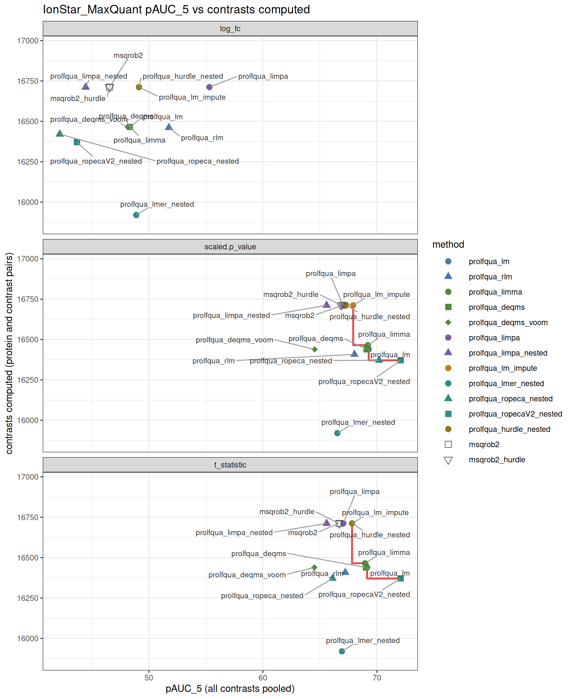
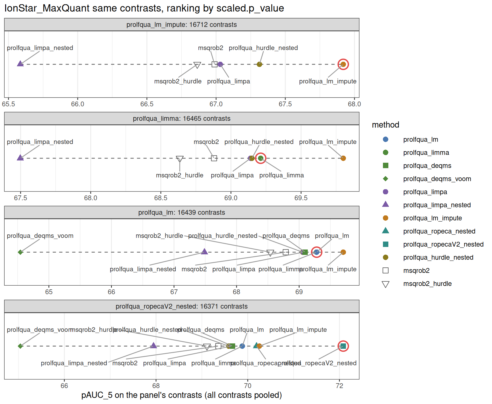
| model | level | contrasts computed | AUC / log_fc | AUC / scaled.p_value | AUC / t_statistic | pAUC_10 / log_fc | pAUC_10 / scaled.p_value | pAUC_10 / t_statistic |
|---|---|---|---|---|---|---|---|---|
| prolfqua_ropecaV2_nested | peptide | 16371 | 92.0 | 93.7 | 94.1 | 64.0 | 77.9 | 78.0 |
| prolfqua_ropeca_nested | peptide | 16371 | 91.8 | 93.6 | 94.0 | 63.0 | 77.1 | 75.8 |
| prolfqua_lm | protein | 16439 | 92.8 | 93.6 | 93.6 | 67.1 | 75.7 | 75.6 |
| prolfqua_limma | protein | 16465 | 92.8 | 93.6 | 93.6 | 67.1 | 75.6 | 75.5 |
| prolfqua_deqms | protein | 16439 | 92.8 | 93.5 | 93.5 | 67.1 | 75.4 | 75.4 |
| prolfqua_rlm | protein | 16408 | 93.2 | 93.6 | 93.6 | 69.1 | 75.2 | 74.9 |
| prolfqua_lm_impute | protein | 16712 | 92.2 | 92.8 | 92.8 | 66.4 | 73.9 | 73.9 |
| msqrob2_hurdle | protein + peptide | 16712 | 92.6 | 92.8 | 93.0 | 66.2 | 73.6 | 72.9 |
| prolfqua_hurdle_nested | protein + peptide | 16712 | 92.2 | 92.5 | 92.8 | 66.4 | 73.4 | 73.9 |
| prolfqua_lmer_nested | peptide | 15920 | 92.6 | 93.1 | 93.1 | 66.5 | 73.3 | 73.6 |
| msqrob2 | protein + peptide | 16712 | 92.6 | 93.0 | 93.0 | 66.2 | 73.1 | 72.9 |
| prolfqua_limpa | protein | 16712 | 91.7 | 91.9 | 91.9 | 69.3 | 72.9 | 72.9 |
| prolfqua_limpa_nested | peptide | 16712 | 92.6 | 93.1 | 93.1 | 63.4 | 72.5 | 72.5 |
| prolfqua_deqms_voom | protein | 16439 | 92.7 | 92.8 | 92.8 | 67.0 | 71.3 | 71.4 |

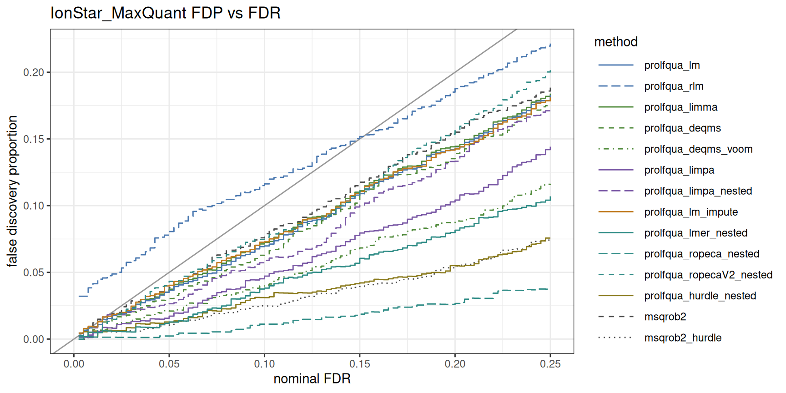
IonStar_MaxQuant_protein
IonStar, MaxQuant proteinGroups.txt (protein level)
- LFQ intensities
- Contaminants and decoys (CON__, REV__) removed
- Proteins with at least 2 peptides
- Intensities below 4 (zeros) removed
- log2, robust scaling on the human proteins
- Every method fits this protein table; the number of peptides weights the prolfqua fits and is the DEqMS count
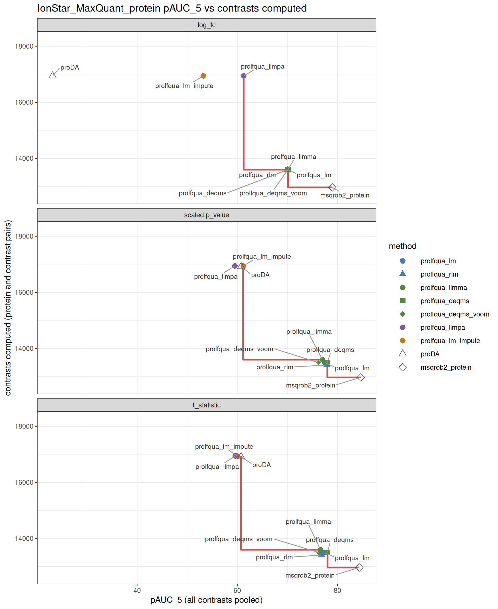

| model | level | contrasts computed | AUC / log_fc | AUC / scaled.p_value | AUC / t_statistic | pAUC_10 / log_fc | pAUC_10 / scaled.p_value | pAUC_10 / t_statistic |
|---|---|---|---|---|---|---|---|---|
| msqrob2_protein | protein | 12965 | 97.1 | 97.2 | 97.2 | 86.9 | 88.0 | 87.9 |
| prolfqua_rlm | protein | 13406 | 95.8 | 96.1 | 96.0 | 81.1 | 83.2 | 82.8 |
| prolfqua_deqms | protein | 13494 | 95.6 | 95.6 | 95.6 | 81.2 | 82.5 | 82.6 |
| prolfqua_lm | protein | 13494 | 95.6 | 95.6 | 95.6 | 81.2 | 82.2 | 82.3 |
| prolfqua_limma | protein | 13597 | 95.6 | 95.5 | 95.5 | 81.2 | 81.9 | 81.8 |
| prolfqua_deqms_voom | protein | 13494 | 95.6 | 95.4 | 95.4 | 81.2 | 81.0 | 81.1 |
| prolfqua_lm_impute | protein | 16940 | 87.9 | 88.3 | 88.1 | 63.8 | 65.9 | 65.4 |
| proDA | protein | 16916 | 87.1 | 88.7 | 88.7 | 49.7 | 65.8 | 65.8 |
| prolfqua_limpa | protein | 16940 | 87.2 | 86.9 | 86.9 | 66.3 | 63.3 | 63.3 |

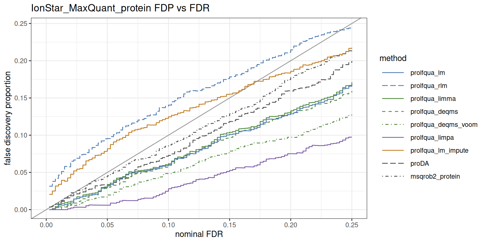
IonStar_FragPipe_MSstats
IonStar, FragPipe MSstats.csv
- Precursor intensities summed to peptides
- Proteins with at least 2 peptides
- Intensities below 4 (zeros) removed
- log2, robust scaling on the human proteins
- prolfqua protein models: peptides median-polished to proteins, weighted by the number of peptides
- prolfqua peptide models and msqrob2: the normalized peptides (msqrob2 median-polishes them itself)
- MSstats: the precursors of MSstats.csv, proteins with at least 2 peptides, its own dataProcess (log2, median equalization, Tukey median polish, imputation of censored values)
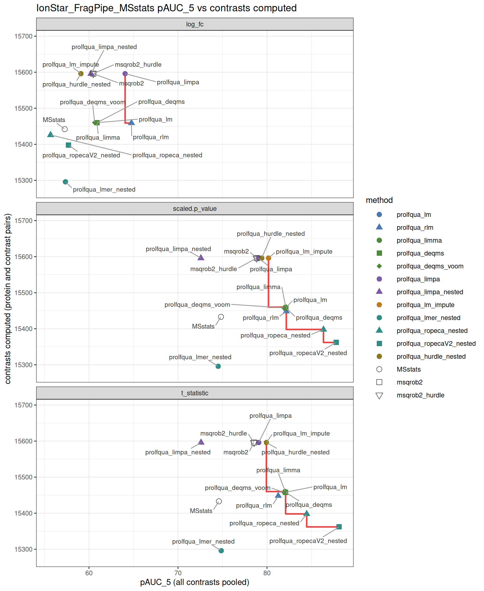
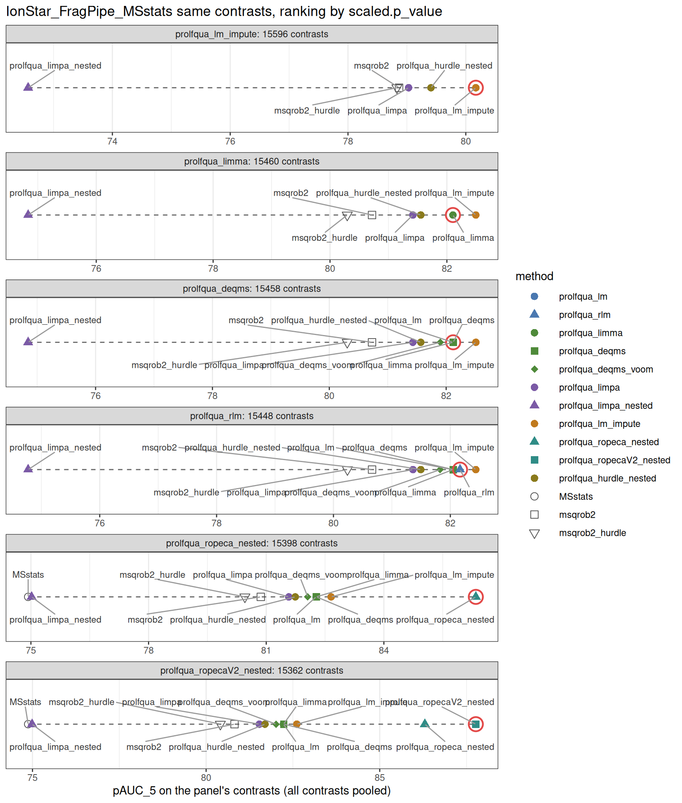
| model | level | contrasts computed | AUC / log_fc | AUC / scaled.p_value | AUC / t_statistic | pAUC_10 / log_fc | pAUC_10 / scaled.p_value | pAUC_10 / t_statistic |
|---|---|---|---|---|---|---|---|---|
| prolfqua_ropecaV2_nested | peptide | 15362 | 96.0 | 97.6 | 98.3 | 76.5 | 91.6 | 92.0 |
| prolfqua_ropeca_nested | peptide | 15398 | 95.8 | 97.7 | 98.1 | 75.4 | 90.2 | 90.0 |
| prolfqua_rlm | protein | 15448 | 96.3 | 97.1 | 97.0 | 80.2 | 87.1 | 86.7 |
| prolfqua_deqms_voom | protein | 15458 | 95.8 | 96.9 | 96.9 | 77.7 | 86.2 | 86.3 |
| prolfqua_lm | protein | 15458 | 95.9 | 96.9 | 96.9 | 77.7 | 86.2 | 86.2 |
| prolfqua_limma | protein | 15460 | 95.9 | 96.9 | 96.9 | 77.7 | 86.2 | 86.2 |
| prolfqua_deqms | protein | 15458 | 95.9 | 96.9 | 96.9 | 77.7 | 86.2 | 86.2 |
| prolfqua_lm_impute | protein | 15596 | 95.1 | 96.1 | 96.1 | 75.3 | 84.1 | 84.1 |
| msqrob2_hurdle | protein + peptide | 15596 | 95.3 | 96.0 | 96.1 | 77.3 | 83.9 | 83.1 |
| prolfqua_hurdle_nested | protein + peptide | 15596 | 95.1 | 95.9 | 96.1 | 75.3 | 83.9 | 84.1 |
| msqrob2 | protein + peptide | 15596 | 95.3 | 96.1 | 96.1 | 77.3 | 83.4 | 83.1 |
| prolfqua_limpa | protein | 15596 | 94.0 | 95.1 | 95.1 | 77.6 | 82.9 | 82.9 |
| MSstats | protein | 15433 | 95.6 | 96.6 | 96.6 | 74.5 | 81.5 | 81.5 |
| prolfqua_lmer_nested | peptide | 15296 | 95.5 | 96.0 | 96.0 | 74.5 | 80.6 | 80.8 |
| prolfqua_limpa_nested | peptide | 15596 | 95.2 | 95.4 | 95.4 | 75.2 | 79.0 | 79.0 |
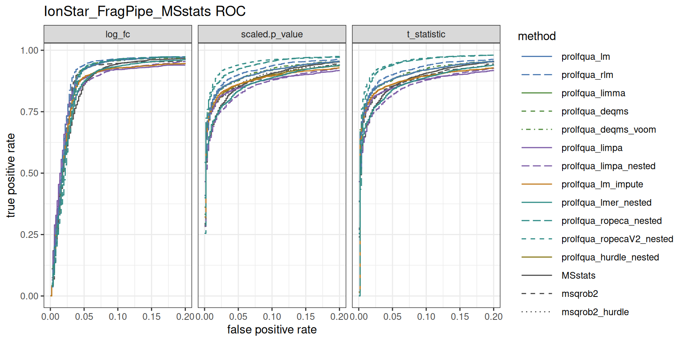

IonStar_FragPipe_protein
IonStar, FragPipe combined_protein.tsv (protein level)
- Razor intensities
- Proteins with at least 2 unique peptides
- Intensities below 4 (zeros) removed
- log2, robust scaling on the human proteins
- Every method fits this protein table; the number of unique peptides weights the prolfqua fits and is the DEqMS count
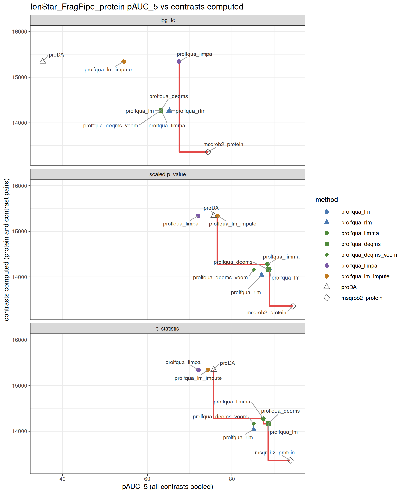
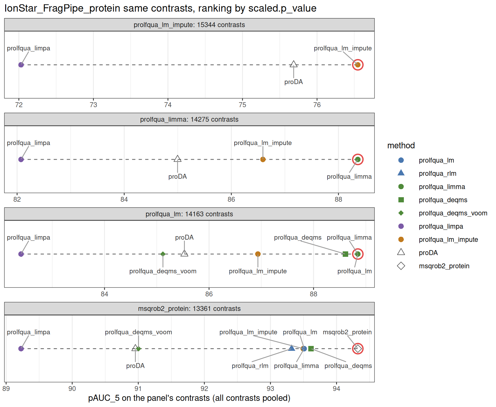
| model | level | contrasts computed | AUC / log_fc | AUC / scaled.p_value | AUC / t_statistic | pAUC_10 / log_fc | pAUC_10 / scaled.p_value | pAUC_10 / t_statistic |
|---|---|---|---|---|---|---|---|---|
| msqrob2_protein | protein | 13361 | 98.2 | 99.2 | 99.2 | 86.6 | 96.1 | 95.8 |
| prolfqua_lm | protein | 14163 | 97.0 | 98.3 | 98.3 | 80.1 | 91.8 | 91.7 |
| prolfqua_deqms | protein | 14163 | 97.0 | 98.3 | 98.3 | 80.1 | 91.6 | 91.7 |
| prolfqua_limma | protein | 14275 | 97.0 | 98.2 | 98.2 | 80.1 | 91.5 | 91.1 |
| prolfqua_rlm | protein | 14039 | 97.1 | 98.2 | 98.1 | 81.1 | 91.1 | 90.3 |
| prolfqua_deqms_voom | protein | 14163 | 97.0 | 97.9 | 97.9 | 80.1 | 89.1 | 89.2 |
| prolfqua_lm_impute | protein | 15344 | 93.1 | 94.2 | 94.1 | 70.1 | 80.4 | 79.4 |
| proDA | protein | 15344 | 91.9 | 94.2 | 94.2 | 61.7 | 80.0 | 80.0 |
| prolfqua_limpa | protein | 15344 | 90.9 | 91.7 | 91.7 | 75.6 | 75.6 | 75.7 |
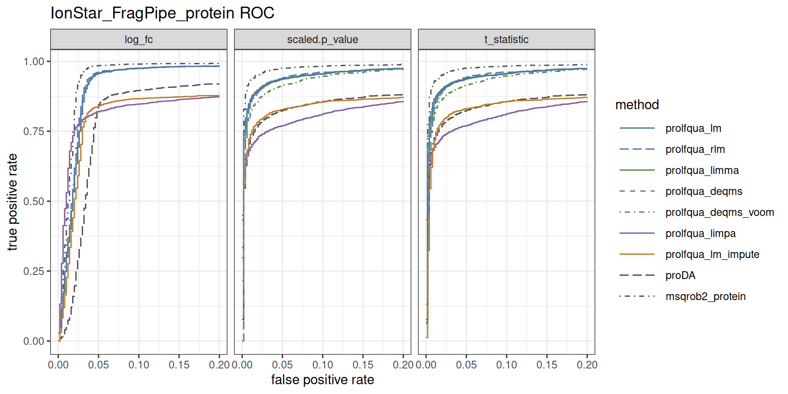
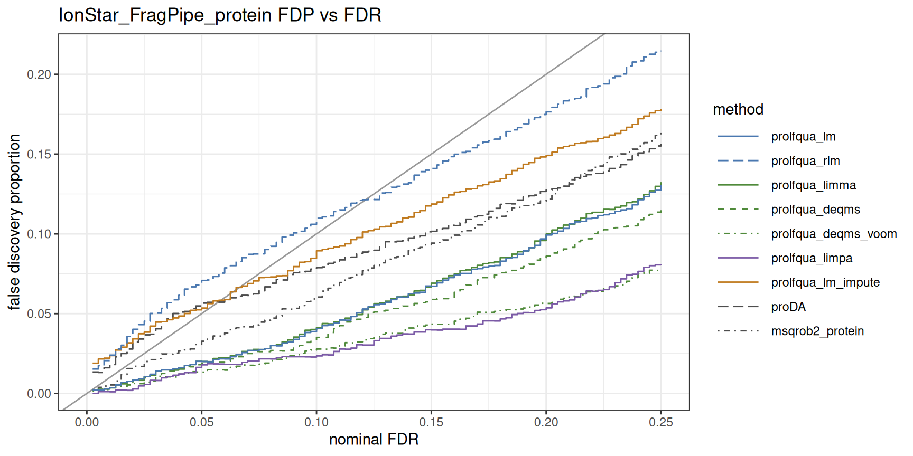
IonStar_MetaMorpheus
IonStar, MetaMorpheus 1.0.7 and FlashLFQ 1.3 QuantifiedPeaks.tsv, with match-between-runs (PIP)
- Decoys and random-RT controls removed
- Peak intensities summed to base sequences; identification confidence 1 for MS/MS peaks, 1 - PIP PEP for match-between-runs peaks
- Protein groups of one organism (human or E. coli)
- Proteins with at least 2 peptides
- Intensities below 4 (zeros) removed
- log2, robust scaling on the human proteins
- prolfqua protein models: peptides median-polished to proteins, weighted by the number of peptides
- prolfqua peptide models and msqrob2: the normalized peptides (msqrob2 median-polishes them itself)
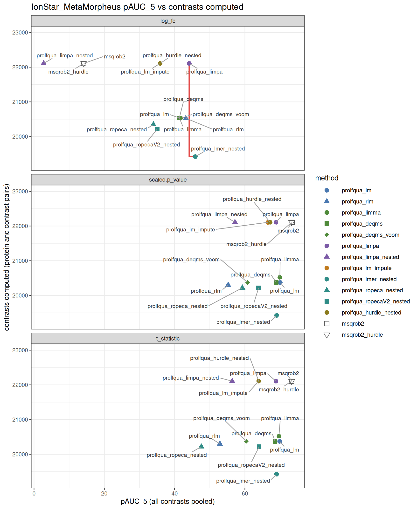

| model | level | contrasts computed | AUC / log_fc | AUC / scaled.p_value | AUC / t_statistic | pAUC_10 / log_fc | pAUC_10 / scaled.p_value | pAUC_10 / t_statistic |
|---|---|---|---|---|---|---|---|---|
| msqrob2 | protein + peptide | 22108 | 91.9 | 94.5 | 94.5 | 48.9 | 78.8 | 78.7 |
| msqrob2_hurdle | protein + peptide | 22108 | 91.9 | 94.4 | 94.5 | 48.9 | 78.7 | 78.7 |
| prolfqua_lm | protein | 20373 | 93.2 | 93.2 | 93.2 | 64.6 | 76.0 | 75.9 |
| prolfqua_limma | protein | 20524 | 93.2 | 93.2 | 93.2 | 64.6 | 75.9 | 75.7 |
| prolfqua_deqms | protein | 20373 | 93.2 | 93.2 | 93.1 | 64.6 | 75.4 | 75.2 |
| prolfqua_limpa | protein | 22108 | 92.1 | 92.4 | 92.4 | 64.3 | 74.9 | 74.9 |
| prolfqua_lmer_nested | peptide | 19424 | 93.1 | 93.0 | 93.1 | 66.3 | 74.7 | 74.8 |
| prolfqua_hurdle_nested | protein + peptide | 22108 | 91.9 | 92.4 | 92.0 | 60.6 | 73.8 | 71.9 |
| prolfqua_lm_impute | protein | 22108 | 91.9 | 92.2 | 92.0 | 60.6 | 73.2 | 71.9 |
| prolfqua_ropecaV2_nested | peptide | 20219 | 92.5 | 91.2 | 91.6 | 59.8 | 69.8 | 70.0 |
| prolfqua_rlm | protein | 20302 | 93.5 | 93.2 | 93.1 | 65.8 | 69.5 | 68.4 |
| prolfqua_deqms_voom | protein | 20373 | 93.4 | 92.0 | 92.0 | 65.0 | 68.6 | 68.4 |
| prolfqua_ropeca_nested | peptide | 20219 | 92.5 | 91.8 | 91.3 | 59.0 | 66.5 | 62.2 |
| prolfqua_limpa_nested | peptide | 22108 | 87.8 | 90.3 | 90.2 | 28.0 | 64.5 | 64.1 |
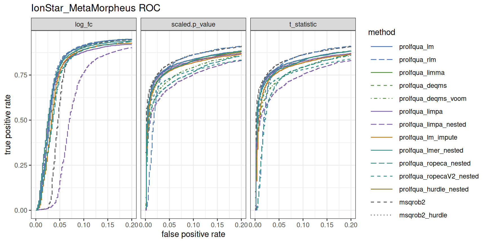
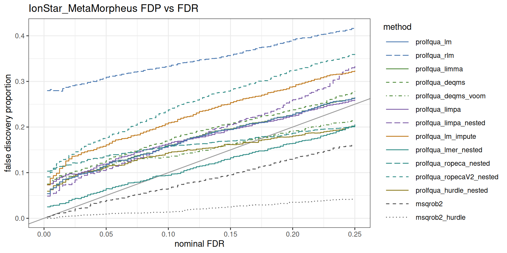
CPTAC_MaxQuant
CPTAC study 6, UPS1 in yeast, MaxQuant peptides.txt (Bioconductor MsDataHub)
- Proteins with at least 2 peptides
- Intensities below 4 (zeros) removed
- vsn (variance-stabilizing transformation)
- prolfqua protein models: peptides median-polished to proteins, weighted by the number of peptides
- prolfqua peptide models and msqrob2: the normalized peptides (msqrob2 median-polishes them itself)
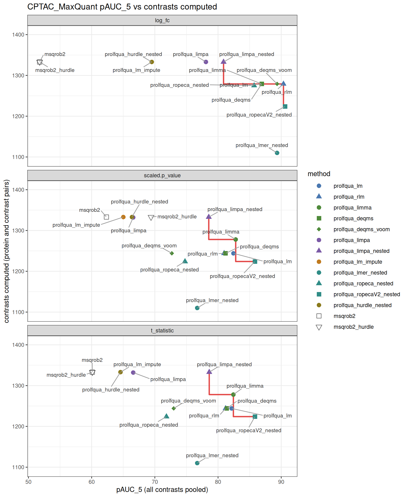
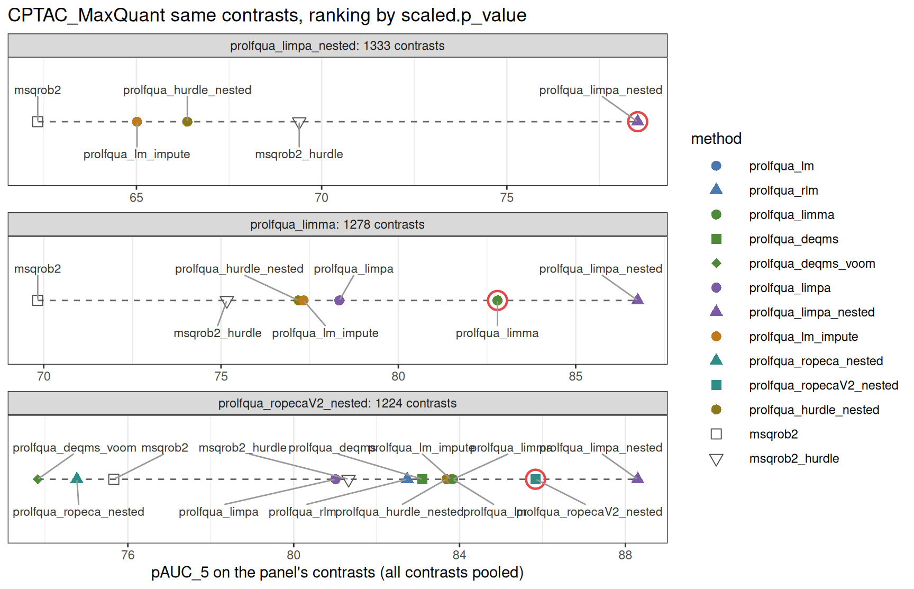
| model | level | contrasts computed | AUC / log_fc | AUC / scaled.p_value | AUC / t_statistic | pAUC_10 / log_fc | pAUC_10 / scaled.p_value | pAUC_10 / t_statistic |
|---|---|---|---|---|---|---|---|---|
| prolfqua_ropecaV2_nested | peptide | 1224 | 96.5 | 96.4 | 96.4 | 92.8 | 90.5 | 90.5 |
| prolfqua_rlm | protein | 1244 | 94.6 | 93.4 | 93.4 | 92.2 | 85.9 | 86.0 |
| prolfqua_limma | protein | 1278 | 93.4 | 92.8 | 92.8 | 89.0 | 84.5 | 84.4 |
| prolfqua_lm | protein | 1244 | 93.4 | 92.7 | 92.7 | 89.0 | 84.1 | 84.0 |
| prolfqua_deqms | protein | 1244 | 93.4 | 92.6 | 92.6 | 89.0 | 83.1 | 83.2 |
| prolfqua_ropeca_nested | peptide | 1224 | 91.8 | 93.0 | 95.1 | 88.6 | 82.6 | 80.9 |
| prolfqua_limpa_nested | peptide | 1333 | 97.6 | 95.4 | 95.4 | 86.8 | 81.2 | 81.3 |
| prolfqua_lmer_nested | peptide | 1110 | 93.9 | 90.2 | 90.2 | 91.6 | 77.9 | 78.0 |
| prolfqua_deqms_voom | protein | 1244 | 94.5 | 92.5 | 92.5 | 91.7 | 76.8 | 76.8 |
| msqrob2_hurdle | protein + peptide | 1333 | 91.2 | 90.0 | 88.8 | 72.5 | 74.0 | 66.1 |
| prolfqua_hurdle_nested | protein + peptide | 1333 | 86.4 | 85.2 | 85.2 | 72.5 | 71.1 | 67.1 |
| prolfqua_limpa | protein | 1332 | 91.5 | 89.3 | 89.3 | 79.5 | 69.4 | 69.3 |
| msqrob2 | protein + peptide | 1333 | 91.2 | 89.1 | 88.8 | 72.5 | 68.9 | 66.1 |
| prolfqua_lm_impute | protein | 1333 | 86.4 | 85.2 | 85.2 | 72.5 | 67.3 | 67.1 |
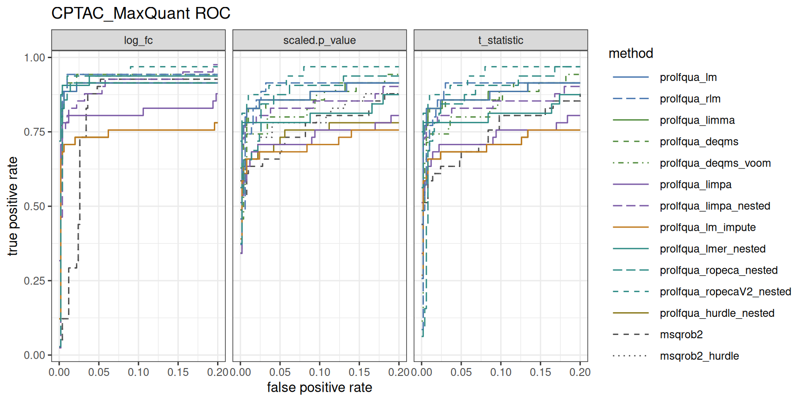

SingleCell_DIANN
ProteoBench DIA single-cell (Orbitrap Astral, 250 pg), DIA-NN 2.5.0 report
- Protein groups at 1% q-value (library and run)
- Precursor quantities summed to stripped sequences; identification confidence 1 - the smallest precursor PEP
- Protein groups of one species (ProteoBench FASTA); contaminants removed
- Proteins with at least 2 peptides
- Intensities below 4 (zeros) removed
- log2, robust scaling on the human proteins
- prolfqua protein models: peptides median-polished to proteins, weighted by the number of peptides
- prolfqua peptide models and msqrob2: the normalized peptides (msqrob2 median-polishes them itself)


| model | level | contrasts computed | AUC / log_fc | AUC / scaled.p_value | AUC / t_statistic | pAUC_10 / log_fc | pAUC_10 / scaled.p_value | pAUC_10 / t_statistic |
|---|---|---|---|---|---|---|---|---|
| prolfqua_ropecaV2_nested | peptide | 5842 | 99.6 | 99.5 | 99.5 | 97.8 | 96.5 | 96.5 |
| prolfqua_lm | protein | 5938 | 99.1 | 99.3 | 99.3 | 96.6 | 96.0 | 96.1 |
| prolfqua_limma | protein | 6021 | 99.1 | 99.2 | 99.2 | 96.6 | 95.8 | 95.8 |
| prolfqua_deqms | protein | 5938 | 99.1 | 99.3 | 99.3 | 96.6 | 95.7 | 95.8 |
| prolfqua_ropeca_nested | peptide | 5842 | 99.4 | 99.4 | 99.2 | 97.1 | 95.4 | 93.7 |
| prolfqua_deqms_voom | protein | 5938 | 99.1 | 99.1 | 99.2 | 96.6 | 95.1 | 95.4 |
| prolfqua_lmer_nested | peptide | 5955 | 99.0 | 98.8 | 98.8 | 95.9 | 93.7 | 93.8 |
| prolfqua_rlm | protein | 5935 | 99.1 | 99.0 | 99.0 | 96.6 | 93.6 | 93.6 |
| prolfqua_limpa_nested | peptide | 6822 | 99.3 | 98.9 | 98.9 | 94.3 | 90.9 | 91.0 |
| msqrob2_hurdle | protein + peptide | 6822 | 99.3 | 98.8 | 98.3 | 93.0 | 88.9 | 83.0 |
| prolfqua_hurdle_nested | protein + peptide | 6822 | 96.3 | 95.9 | 96.2 | 80.6 | 87.1 | 79.3 |
| msqrob2 | protein + peptide | 6822 | 99.3 | 98.6 | 98.3 | 93.0 | 86.0 | 83.0 |
| prolfqua_limpa | protein | 6806 | 97.0 | 97.0 | 97.1 | 85.4 | 82.1 | 82.7 |
| prolfqua_lm_impute | protein | 6819 | 96.3 | 96.2 | 96.2 | 80.6 | 79.2 | 79.3 |
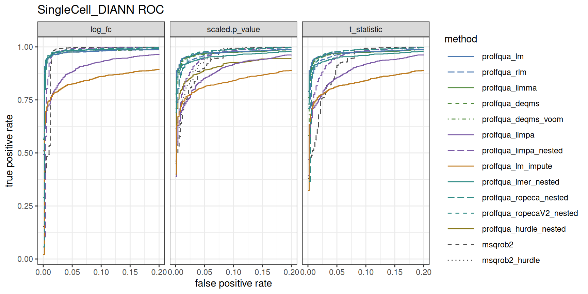

SingleCell_MaxQuant
ProteoBench DIA single-cell (Orbitrap Astral, 250 pg), MaxQuant 2.7.5.0 DIA evidence.txt
- Proteotypic evidence, decoys removed
- Evidence intensities summed to peptides; identification confidence 1 - the smallest evidence PEP
- Leading razor proteins of one species (ProteoBench FASTA); contaminants removed
- Proteins with at least 2 peptides
- Intensities below 4 (zeros) removed
- log2, robust scaling on the human proteins
- prolfqua protein models: peptides median-polished to proteins, weighted by the number of peptides
- prolfqua peptide models and msqrob2: the normalized peptides (msqrob2 median-polishes them itself)
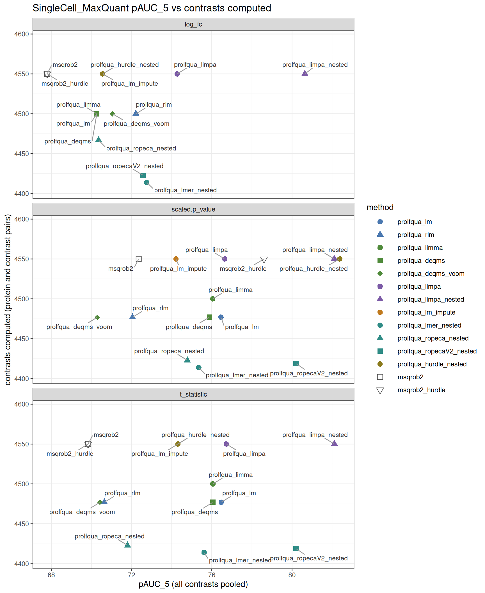
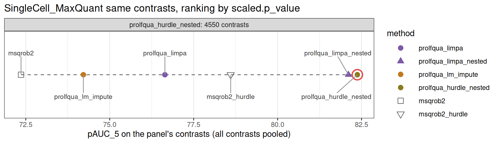
| model | level | contrasts computed | AUC / log_fc | AUC / scaled.p_value | AUC / t_statistic | pAUC_10 / log_fc | pAUC_10 / scaled.p_value | pAUC_10 / t_statistic |
|---|---|---|---|---|---|---|---|---|
| prolfqua_hurdle_nested | protein + peptide | 4550 | 92.9 | 93.9 | 93.4 | 79.2 | 85.8 | 78.7 |
| prolfqua_limpa_nested | peptide | 4550 | 96.2 | 96.1 | 96.1 | 86.4 | 85.4 | 85.4 |
| prolfqua_ropecaV2_nested | peptide | 4419 | 93.6 | 94.3 | 94.4 | 81.7 | 84.5 | 84.6 |
| msqrob2_hurdle | protein + peptide | 4550 | 94.8 | 95.3 | 94.5 | 80.0 | 83.1 | 76.7 |
| prolfqua_limpa | protein | 4550 | 95.1 | 95.2 | 95.3 | 82.0 | 80.7 | 80.8 |
| prolfqua_lm | protein | 4477 | 92.6 | 93.6 | 93.6 | 79.5 | 80.4 | 80.4 |
| prolfqua_limma | protein | 4500 | 92.6 | 93.3 | 93.3 | 79.5 | 79.9 | 80.0 |
| prolfqua_deqms | protein | 4477 | 92.6 | 93.6 | 93.6 | 79.5 | 79.8 | 80.0 |
| prolfqua_ropeca_nested | peptide | 4423 | 92.7 | 93.6 | 93.5 | 80.1 | 79.7 | 79.9 |
| prolfqua_lmer_nested | peptide | 4414 | 93.3 | 93.5 | 93.5 | 81.6 | 79.5 | 79.6 |
| prolfqua_lm_impute | protein | 4550 | 92.9 | 93.3 | 93.4 | 79.2 | 78.5 | 78.7 |
| msqrob2 | protein + peptide | 4550 | 94.8 | 94.7 | 94.5 | 80.0 | 78.4 | 76.7 |
| prolfqua_rlm | protein | 4477 | 93.1 | 93.3 | 93.2 | 80.8 | 78.2 | 77.7 |
| prolfqua_deqms_voom | protein | 4477 | 92.8 | 92.9 | 92.9 | 80.0 | 75.3 | 75.5 |

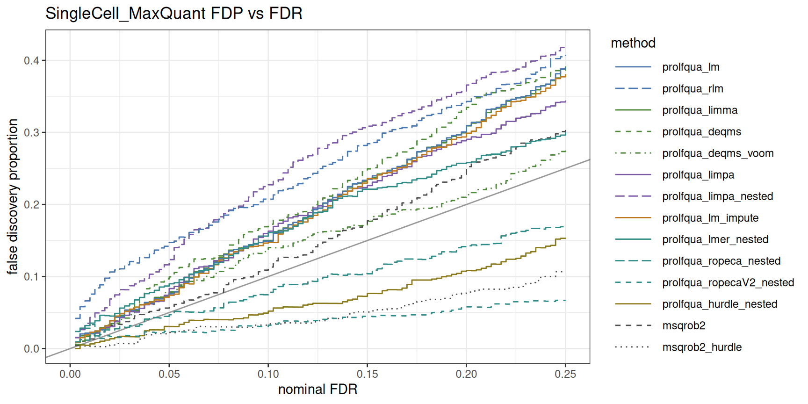
diaPASEF_DIANN
ProteoBench DIA diaPASEF (timsTOF, human/yeast/E. coli; E. coli 4x up, yeast 2x down), DIA-NN 2.5.0 report
- Protein groups at 1% q-value (library and run)
- Precursor quantities summed to stripped sequences; identification confidence 1 - the smallest precursor PEP
- Protein groups of one species (ProteoBench FASTA); contaminants removed
- Proteins with at least 2 peptides
- Intensities below 4 (zeros) removed
- log2, robust scaling on the human proteins
- prolfqua protein models: peptides median-polished to proteins, weighted by the number of peptides
- prolfqua peptide models and msqrob2: the normalized peptides (msqrob2 median-polishes them itself)
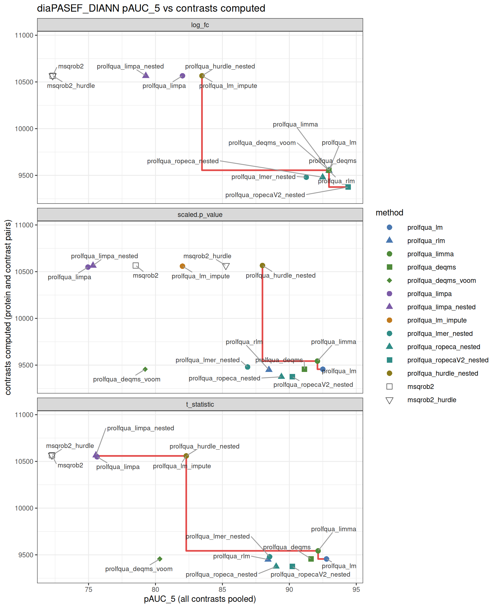
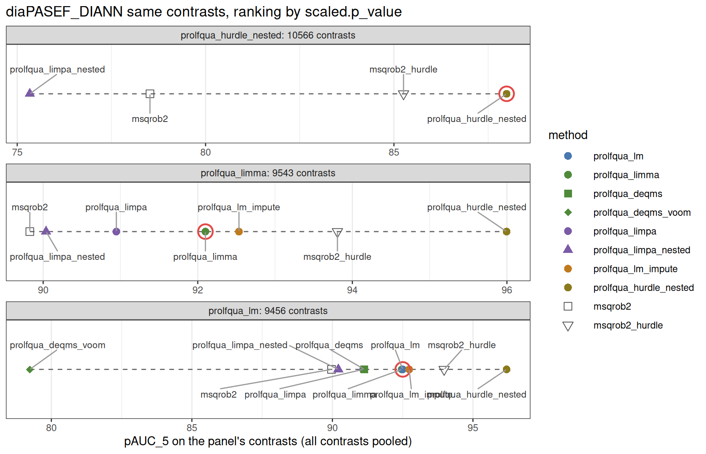
| model | level | contrasts computed | AUC / log_fc | AUC / scaled.p_value | AUC / t_statistic | pAUC_10 / log_fc | pAUC_10 / scaled.p_value | pAUC_10 / t_statistic |
|---|---|---|---|---|---|---|---|---|
| prolfqua_lm | protein | 9456 | 98.5 | 98.4 | 98.5 | 95.4 | 94.3 | 94.5 |
| prolfqua_limma | protein | 9543 | 98.5 | 98.3 | 98.3 | 95.4 | 94.0 | 94.1 |
| prolfqua_deqms | protein | 9456 | 98.5 | 98.3 | 98.3 | 95.4 | 93.3 | 93.6 |
| prolfqua_ropeca_nested | peptide | 9375 | 98.8 | 98.7 | 98.8 | 95.4 | 93.3 | 93.5 |
| prolfqua_ropecaV2_nested | peptide | 9375 | 99.1 | 98.7 | 98.7 | 96.6 | 93.2 | 93.2 |
| prolfqua_rlm | protein | 9450 | 98.5 | 98.1 | 98.2 | 95.4 | 91.9 | 92.0 |
| prolfqua_hurdle_nested | protein + peptide | 10566 | 95.6 | 95.8 | 95.2 | 87.0 | 90.3 | 84.9 |
| prolfqua_lmer_nested | peptide | 9480 | 98.6 | 97.3 | 97.4 | 94.8 | 89.8 | 90.7 |
| msqrob2_hurdle | protein + peptide | 10566 | 98.2 | 98.4 | 97.3 | 85.7 | 89.7 | 80.4 |
| msqrob2 | protein + peptide | 10566 | 98.2 | 97.8 | 97.3 | 85.7 | 84.7 | 80.4 |
| prolfqua_lm_impute | protein | 10559 | 95.6 | 95.1 | 95.2 | 87.0 | 84.7 | 84.9 |
| prolfqua_deqms_voom | protein | 9456 | 98.5 | 96.2 | 96.3 | 95.4 | 83.8 | 84.6 |
| prolfqua_limpa_nested | peptide | 10566 | 98.4 | 97.2 | 97.2 | 89.1 | 81.7 | 81.8 |
| prolfqua_limpa | protein | 10549 | 97.1 | 95.3 | 95.5 | 87.0 | 79.0 | 79.7 |


diaPASEF_Spectronaut
ProteoBench DIA diaPASEF (timsTOF, human/yeast/E. coli; E. coli 4x up, yeast 2x down), Spectronaut 21.0 report
- Precursor quantities summed to peptides (PEP.GroupingKey); identification confidence 1 - the smallest precursor q-value
- Protein groups of one species (ProteoBench FASTA); contaminants removed
- Proteins with at least 2 peptides
- Intensities below 4 (zeros) removed
- log2, robust scaling on the human proteins
- prolfqua protein models: peptides median-polished to proteins, weighted by the number of peptides
- prolfqua peptide models and msqrob2: the normalized peptides (msqrob2 median-polishes them itself)
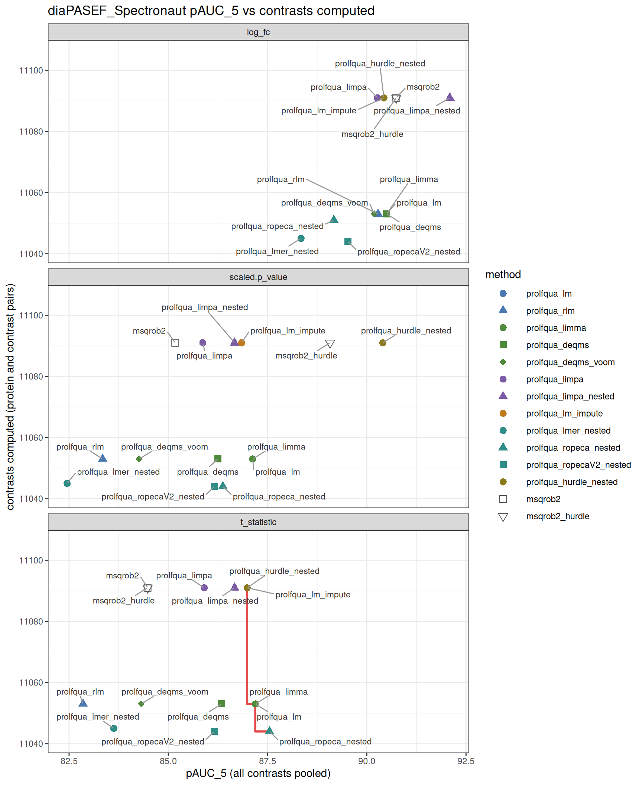
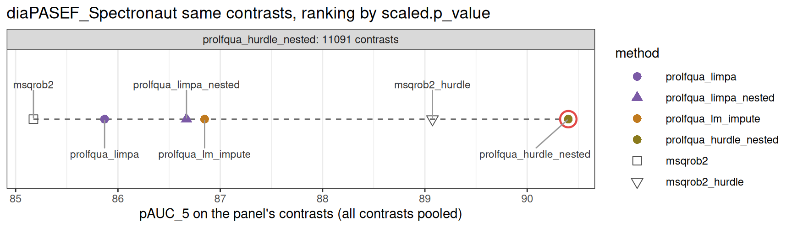
| model | level | contrasts computed | AUC / log_fc | AUC / scaled.p_value | AUC / t_statistic | pAUC_10 / log_fc | pAUC_10 / scaled.p_value | pAUC_10 / t_statistic |
|---|---|---|---|---|---|---|---|---|
| prolfqua_hurdle_nested | protein + peptide | 11091 | 97.9 | 97.8 | 97.7 | 93.4 | 92.9 | 90.0 |
| msqrob2_hurdle | protein + peptide | 11091 | 98.2 | 98.1 | 97.9 | 93.9 | 92.3 | 89.0 |
| prolfqua_limma | protein | 11053 | 97.9 | 97.7 | 97.7 | 93.5 | 90.2 | 90.3 |
| prolfqua_lm | protein | 11053 | 97.9 | 97.7 | 97.7 | 93.5 | 90.2 | 90.3 |
| prolfqua_ropeca_nested | peptide | 11044 | 97.6 | 97.6 | 97.8 | 92.7 | 90.2 | 91.3 |
| prolfqua_lm_impute | protein | 11091 | 97.9 | 97.7 | 97.7 | 93.4 | 89.9 | 90.0 |
| prolfqua_limpa_nested | peptide | 11091 | 98.6 | 97.9 | 97.9 | 94.8 | 89.7 | 89.7 |
| prolfqua_deqms | protein | 11053 | 97.9 | 97.7 | 97.7 | 93.5 | 89.6 | 89.6 |
| prolfqua_limpa | protein | 11091 | 98.0 | 97.8 | 97.8 | 93.5 | 89.5 | 89.5 |
| prolfqua_ropecaV2_nested | peptide | 11044 | 97.7 | 97.7 | 97.7 | 92.9 | 89.4 | 89.4 |
| msqrob2 | protein + peptide | 11091 | 98.2 | 97.9 | 97.9 | 93.9 | 89.3 | 89.0 |
| prolfqua_deqms_voom | protein | 11053 | 97.7 | 97.4 | 97.4 | 93.3 | 88.1 | 88.1 |
| prolfqua_rlm | protein | 11053 | 97.7 | 97.3 | 97.3 | 93.3 | 88.0 | 87.7 |
| prolfqua_lmer_nested | peptide | 11045 | 97.4 | 96.6 | 96.7 | 92.0 | 86.3 | 87.0 |
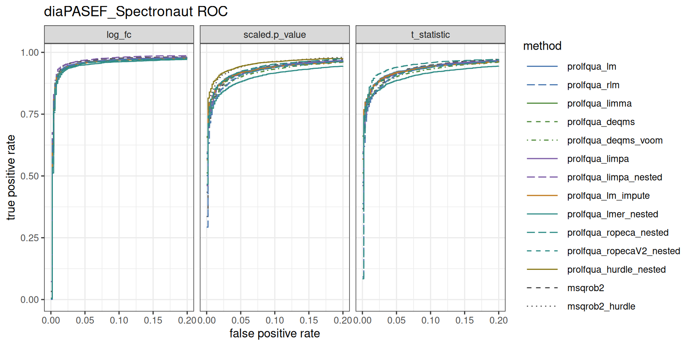
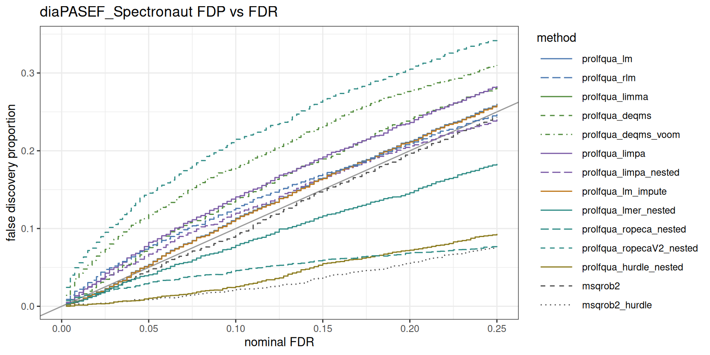